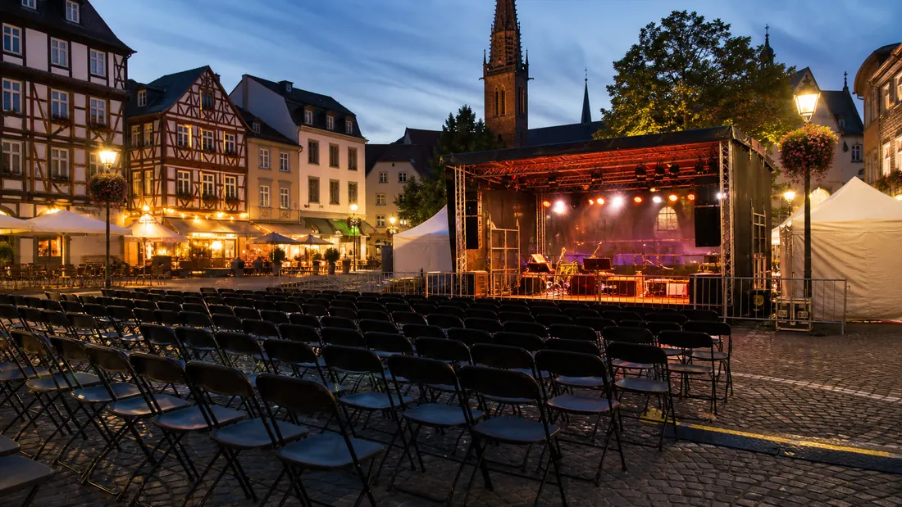

Tagesarchiv
56 regionale Meldungen
Alle Karten öffnen die jeweilige Originalmeldung.

Hessen Aktuell
Regionale Meldungen dieses Tages, gesammelt aus den aktiven Quellen und nach Stadt sowie Thema lesbar.
Tagesarchiv
Alle Karten öffnen die jeweilige Originalmeldung.
Meldungen

Kassel · Politik
Passend zur aktuellen Sonderausstellung „Höher Schneller Weiter“ lädt das Naturkundemuseum Kassel am Sonntag, 8. November, um 11 und um 14 Uhr zu zwei jeweils 30-minütigen Vorstellungen des „Zirkus Zwick“ ein.

Kassel · Politik
Die Stadt schafft mit einem Nachtragshaushalt für das Jahr 2026 die notwendigen haushaltsrechtlichen Voraussetzungen, um flexibel auf die weitere finanzielle Entwicklung reagieren zu können.

Kassel · Politik
Wegen eines Teamworkshops bleiben das Bürgerbüro und das Servicecenter der Stadt Kassel am Freitag, 6. November, geschlossen.

Kassel · Politik
183 Menschen erhielten 2026 erstmals die Ehrenamtskarte Weitere Details, Hintergründe und vollständige Angaben stehen in der verlinkten Originalmeldung.
Kassel · Politik
Vermittlung von Pferden aus Tierschutzfall in fachkundige und liebevolle Hände Weitere Details, Hintergründe und vollständige Angaben stehen in der verlinkten Originalmeldung.
Kassel · Politik
Förderprogramm läuft Ende des Jahres aus - Dorfscheune in Hümme und Spielplatz in Hombressen sind die letzten Maßnahmen Weitere Details, Hintergründe und vollständige Angaben stehen in der verlinkten Originalmeldung.
Kassel · Politik
Auszeit am Montag, 9. November, in der Märchenlandtherme Weitere Details, Hintergründe und vollständige Angaben stehen in der verlinkten Originalmeldung.
Kassel · Politik

Kassel · Polizei
In dem Ermittlungskomplex wegen besonders schweren Fällen von Erpressungen und Brandstiftungen ermitteln die Kasseler Staatsanwaltschaft und die eigens eingerichtete AG Bistro weiterhin mit Hochdruck.

Kassel · Polizei
Am 16.09.2026 gab es die nordhessische Premiere zum Format „Musik trifft Prävention“ in Bad Arolsen. Knapp 300 Bürgerinnen und Bürger waren der Einladung der Stadt Bad Arolsen gefolgt.

Kassel · Polizei
Großer Andrang, viele tolle Gespräche und starkes Interesse an den verschiedenen Berufen der Einsatzkräfte: Darauf kann die Blaulichtfamilie nach der Veranstaltung in Kassel zurückblicken.

Kassel · Polizei
Die Kasseler Polizei und die Staatsanwaltschaft Kassel ermitteln aktuell in drei mutmaßlichen Erpressungsfällen, bei denen eine Tätergruppe von verschiedenen Geschäftsinhabern Geldsummen forderten.
Kassel · Polizei
Im Rahmen der Aktion "Blitz for Kids" hat die nordhessische Polizei zusammen mit Schülerinnen und Schülern Geschwindigkeitskontrollen im Umfeld von Schulen und Kitas durchgeführt.
Frankfurt · Polizei
Frankfurt (ots) - (ha) Seit Mittwoch, dem 12.August.2026, wird die 77-jährige Elena D. aus Frankfurt vermisst. Letztmaliger Kontakt zu der Vermissten bestand im Juli 2026. Elena D. kann wie folgt beschrieben werden: 77 Jahre, schlanke Gestalt, ...
Frankfurt · Polizei
Frankfurt (ots) - (ha) Das Vorzeigen falscher Papiere konnte am gestrigen Montagnachmittag (2. November 2026) die Festnahme zweier mutmaßlicher Taschendiebe durch aufmerksame Polizeibeamte in Niederursel nicht verhindern. Der Festnahme ging ...
Frankfurt · Polizei
Frankfurt (ots) - (ha) Ein Streit unter Hundebesitzern eskalierte am gestrigen Montagabend (2.November 2026) in Ginnheim. Der Beschuldigte soll die Geschädigte dabei geschlagen und mit Bezug auf ihre seiner Meinung nach sexuelle Orientierung ...
Frankfurt · Polizei
Frankfurt (ots) - (ha) Ein bislang unbekannter Tatverdächtiger erbeutete am gestrigen Montagabend (2. November 2026) mit der Masche des falschen Mitarbeiters einer Telekommunikationsgesellschaft einen niedrigen vierstelligen Buchgeldbetrag. Der ...
Frankfurt · Polizei
Frankfurt (ots) - (ha) Am gestrigen Montagmittag (2. November 2026) soll ein Sattelzug beim Unterfahren einer Brücke diese beschädigt haben. Der Sattelzugfahrer sei weitergefahren, die Polizei hat die Ermittlungen aufgenommen. Der bislang ...

Frankfurt · Verkehr
Andere Linien als Alternativen verstärkt, Busse als Ersatz Weitere Details, Hintergründe und vollständige Angaben stehen in der verlinkten Originalmeldung.

Frankfurt · Verkehr
Linien 12, 15, 19 und 21 auf Umwegen/ SEV eingerichtet Weitere Details, Hintergründe und vollständige Angaben stehen in der verlinkten Originalmeldung.

Frankfurt · Verkehr
Linie auf Strecke Heerstraße – Eissporthalle reduziert, U4 bindet Enkheim an Weitere Details, Hintergründe und vollständige Angaben stehen in der verlinkten Originalmeldung.

Frankfurt · Verkehr
Andere Linien als Alternativen verstärkt, Busse als Ersatz Weitere Details, Hintergründe und vollständige Angaben stehen in der verlinkten Originalmeldung.
Frankfurt · Verkehr
Aufgrund von Gleis- und Weichenbauarbeiten fahren die Straßenbahnlinien 12, 15, 17, 18 und 21 auf geänderten Routen. Weitere Details, Hintergründe und vollständige Angaben stehen in der verlinkten Originalmeldung.
Frankfurt · Verkehr
Die Mainova AG beginnt am Montag, 26. Oktober 2026, mit vorbereitenden Maßnahmen für den künftigen Fernwärmeanschluss des Frankfurter Zoos.

Frankfurt · Wirtschaft
Mainova bestätigt hohe Leistungsfähigkeit Weitere Details, Hintergründe und vollständige Angaben stehen in der verlinkten Originalmeldung.
Frankfurt · Verkehr
Die Preise für Fernwärme im Tarif Wärme Classic steigen turnusgemäß zum 1. Oktober 2026 leicht an. Das wirkt sich je nach Verbrauch und angeschlossener Leistung unterschiedlich aus. Grundlage hierfür sind die vertraglich festgelegten Preisformeln.
Wiesbaden · Verkehr
Die Henkell-Kunsteisbahn in Wiesbaden startet am Samstag, 7. November, in die neue Eissaison. Weitere Details, Hintergründe und vollständige Angaben stehen in der verlinkten Originalmeldung.
Wiesbaden · Politik
Auf dem Areal des ehemaligen „Alten Arbeitsamts“ soll ein gemeinsames Oberstufenhaus für die Elly-Heuss-Schule und die Oranienschule entstehen, ergänzt um eine Einfeldsporthalle. Das hat der Magistrat der Landeshauptstadt Wiesbaden am Dienstag, 3. November, beschlossen. Zustimmen müssen noch der Fachausschuss und die.
Wiesbaden · Verkehr
Am Donnerstag, 12. November, sind die Digital-Lotsen von 14 bis 16 Uhr in der Musterausstellung Belle Wi, Föhrer Straße 74, zu Gast. Sie beraten alle, die sich in der digitalen Welt besser zurechtfinden möchten. Das Angebot ist kostenfrei, eine Anmeldung ist nicht erforderlich.
Wiesbaden · Politik
Das Stadtforstamt bietet auch in diesem Jahr wieder frisch geschnittenes Reisig an, mit dem sich Gräber abdecken und Adventskränze binden lassen. Verkauft wird Reisig der Nordmanntanne. Der Verkauf beginnt am Montag, 9. November, und endet am Donnerstag, 3. Dezember.

Wiesbaden · Veranstaltungen
Am Donnerstag, 5. November, um 18 Uhr lädt das sam – Stadtmuseum am Markt, Marktplatz, zum Vortrag „Die Kriegsgräber auf dem Südfriedhof“ mit dem Historiker Dr. Götz Hartmann ein. Die Veranstaltung findet im Rahmen der Kulturinitiative Wiesbaden statt. Der Eintritt ist frei.
Wiesbaden · Polizei
Wiesbaden (ots) - Mehrere Einbrüche im Wiesbadener Stadtgebiet, Wiesbaden, Freitag, 30.10.2026, bis Montag, 02.11.2026 (kq)Zwischen Samstag und Montag kam es im Wiesbadener Stadtgebiet zu mehreren Einbrüchen in Wohnhäuser und Gewerberäume. In ...
Wiesbaden · Polizei
Wiesbaden (ots) - Pkw überschlägt sich nach Unfall, Wiesbaden, Erbenheim, Bundesautobahn 66, Dienstag, 03.11.2026, 06:00 Uhr (il)Am Montagmorgen kam es auf der Bundesautobahn 66 zu einem Unfall, bei dem sich ein Pkw überschlug. Gegen 06:00 Uhr ...
Wiesbaden · Verkehr
Wiesbaden (ots) - 1. Wohnungsbrand in Mehrfamilienhaus - 46-Jährige festgenommen, Wiesbaden-Klarenthal, Goerdelerstraße, Sonntag, 01.11.2026, 03:20 Uhr (kq)Am frühen Sonntagmorgen kam es in einem Mehrfamilienhaus in der Goerdelerstraße in ...

Wiesbaden · Sicherheit
Wiesbaden (ots) - Sehr geehrte Kolleginnen und Kollegen in den Redaktionen, die Hessische Hochschule für öffentliches Management und Sicherheit (HöMS) und die Kreisstadt Hofheim am Taunus haben ein gemeinsames Pilotprojekt zu Digitalisierung und ...
Wiesbaden · Polizei
Wiesbaden (ots) - 59-Jähriger vermisst - Polizei bittet um Hinweise, Wiesbaden, Ludwig-Erhard-Straße, Freitag, 30.10.2026 (kq)Seit Freitagvormittag wird der 59-jährige Michael Ziesner vermisst. Der Mann verließ am 30.10.2026 ein Krankenhaus in ...
Darmstadt · Politik
Am 10. November wird die Juryentscheidung im Darmstädter Schloss bekanntgegeben / Aufgabe dieses Jahr: „Schlafende Häuser – Hotels für Darmstadt“
Darmstadt · Politik
Offene Kinder- und Jugendsprechstunde mit Bürgermeisterin Akdeniz am 10. November im Jugendzentrum im Martinsviertel Weitere Details, Hintergründe und vollständige Angaben stehen in der verlinkten Originalmeldung.

Darmstadt · Veranstaltungen
Auftaktveranstaltung zur Neugestaltung des Ollendorffplatzes am 7. November in der Heimstättensiedlung Weitere Details, Hintergründe und vollständige Angaben stehen in der verlinkten Originalmeldung.
Darmstadt · Politik
Für Kinder am 7. und 14. November in der Darmstädter Stadtbibliothek Weitere Details, Hintergründe und vollständige Angaben stehen in der verlinkten Originalmeldung.

Darmstadt · Veranstaltungen
Interaktive Online-Veranstaltung der Wissenschaftsstadt Darmstadt und des Landkreises Darmstadt-Dieburg am 12. November Weitere Details, Hintergründe und vollständige Angaben stehen in der verlinkten Originalmeldung.
Darmstadt · Polizei
Darmstadt (ots) - Einbrecher haben zwischen Donnerstagmorgen (29.10.) und Montagabend (2.11.) ein Wohnhaus in der Erbacher Straße ins Visier genommen. Ersten Ermittlungen zufolge verschafften sich die bislang unbekannten Täter gewaltsam über eine ...
Darmstadt · Polizei
Darmstadt (ots) - Bislang unbekannte Täter verschafften sich zwischen Freitag (30.10.), 19.30 Uhr, und Montag (2.11.), 4.45 Uhr, Zutritt zu einer Schule in der Ludwigshöhstraße. Nach ersten Ermittlungen hebelten die Kriminellen ein Fenster auf ...
Darmstadt · Polizei
Darmstadt (ots) - Nach einer am Samstagabend (31.10.) gegen 20.45 Uhr im Bereich der Mirjam-Pressler-Straße stattgefundenen Auseinandersetzung suchen die Ermittlerinnen und Ermittler der Kripo nach Zeugen. Nach derzeitigen Erkenntnissen sollen ...
Darmstadt · Verkehr
Darmstadt (ots) - Zwischen Samstagabend (31.10.) und Sonntagabend (01.11.) nahmen Kriminelle ein Wohnhaus in der Heinrich-Delp-Straße ins Visier. Ersten Ermittlungen zufolge verschafften sich die noch unbekannten Täter gewaltsam über ein Fenster ...
Darmstadt · Polizei
Darmstadt (ots) - Am Mittwoch, den 04. November 2026 stellt das Hauptzollamt Darmstadt die Telefonie um. Von 09:00 Uhr bis 10:00 Uhr wird das Hauptzollamt Darmstadt an seinen Standorten Darmstadt, Frankfurt am Main, Hanau, Offenbach am Main und ...
Hessen · Verkehr
GeoProH liefert ein genaueres Bild des Untergrunds im Oberrheingraben. Land, Kommunen und Unternehmen beraten nächste Erkundungsschritte.
Hessen · Verkehr
Wirtschaftsminister trifft Gründerinnen und Gründer aus Nordhessen – Land arbeitet an einfacheren Förderverfahren und stärkt junge Unternehmen.
Hessen · Verkehr
Spatenstich für die neue B44. Weitere Details, Hintergründe und vollständige Angaben stehen in der verlinkten Originalmeldung.
Hessen · Verkehr
Wirtschaftsminister Kaweh Mansoori beim Hessischen Innenstadtkongress in Marburg – Land unterstützt 138 Kommunen mit rund 52 Millionen Euro – Neuer Bewerbungsaufruf für „Ab in die Mitte!“ startet
Hessen · Verkehr
Hessen und die EU fördern die Entwicklung neuer Infrarotsensoren und die Erforschung gesellschaftlicher Akzeptanz an der Universität Gießen mit bis zu 2,82 Millionen Euro.

Hessen · Veranstaltungen
Ausgezeichnet werden das Literaturfestival „Literarischer Frühling in der Heimat der Brüder Grimm“, das Kultur- und Freizeitzentrum Marburg e. V. und die Internationalen Ferienkurse für Neue Musik.

Hessen · Sicherheit
Hessen beteiligt sich vom 4. bis 6. November 2026 an der zehnten Länder- und Ressortübergreifenden Krisenmanagementübung (LÜKEX).
Hessen · Politik
Staatssekretär Prof. Dr. Raible würdigt Engagement für Teilhabe und ein starkes Miteinander. Weitere Details, Hintergründe und vollständige Angaben stehen in der verlinkten Originalmeldung.
Hessen · Politik
Staatssekretär Köfer übergibt Zertifikate nach erfolgreicher Qualifizierung: 63 Engagement-Lotsinnen und -Lotsen aus 17 Städten und Gemeinden haben die Qualifizierung des Landes abgeschlossen.
Hessen · Politik
Bildungsminister Schwarz hat an der Hauptpreisträgerin des Deutschen Schulpreises 2026, der Bertha-von-Suttner-Schule in Mörfelden-Walldorf, Einblicke in die Arbeit der Schule bekommen.